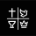

<ion-header>
  <ion-toolbar>
    <ion-buttons slot="primary">
      <ion-avatar slot="start" style="margin-right: 15px;">
        
      </ion-avatar>
    </ion-buttons>
    <ion-avatar slot="start" style="margin-left: 15px;">
      
    </ion-avatar>
    <div class="title">
      <ion-note>Igreja do Evangélio Quadrangular</ion-note>
      <ion-title>IEQ Santinho</ion-title>
    </div>
  </ion-toolbar>
</ion-header>
